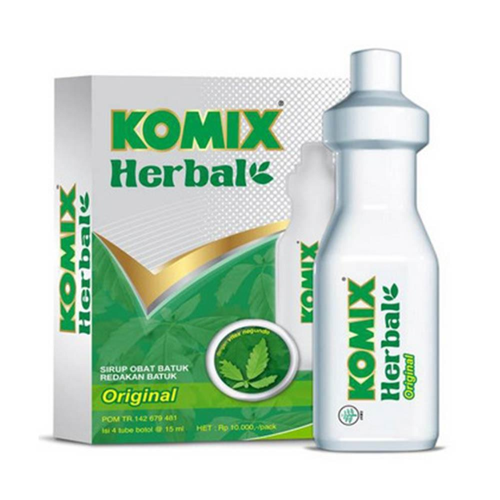
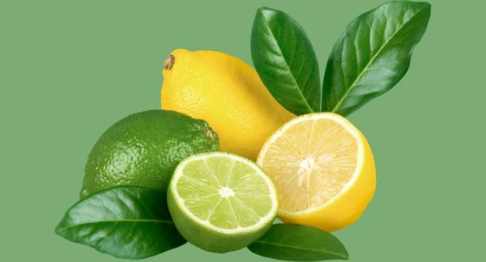

Batuk berdahak
Seperti namanya, batuk berdahak, atau disebut juga batuk produktif, adalah batuk yang disertai dengan keluarnya lendir atau dahak.
- Gejala : Rasa mengganjal pada tenggorokan karena ada lendir atau dahak.
- Penyebab : Ada banyak kondisi yang bisa jadi penyebab batuk berdahak, dan penting untuk mengetahuinya, agar memudahkan pengobatan.
-
Pengobatan Konvensional
Komix Herbal Sirup.
- Kandungan : Vitex negundo folium extract (lagundi) 200mg, Zingiberis officinale Rosch Extract (jahe merah) 30mg, Thymus vulgaris herba extract (thymi herba) 100mg, Glycyrrhiza glabra radix extract (licorice) 167mg, Oleum menthae piperitae (peppermint oil) 11mg, Mel depuratum (madu) 3000mg
- Dewasa: Dewasa : 3 x sehari 1 tube botol, Anak-anak : 1/2 dosis dewasa
- Indikasi : Membantu meredakan batuk berdahak
- Kontra indikasi : Tidak boleh digunakan untuk anak-anak dibawah 2 tahun. Simpan pada suhu di bawah 30 C
- ESO : Mengantuk, gangguan pencernaan, sakit kepala, gangguan psikomotorik, takikardi, aritmia, mulut kering, palpitasi, kesulitan berkemih.
-
Pengobatan Herbal
Perasan Jeruk Segar
- Melansir Women’s Health, penderita batuk berdahak perlu banyak mengonsumsi cairan, terutama yang mengandung vitamin C tinggi. Perlu diketahui, paru-paru perlu asupan cairan yang cukup untuk mencegah terbentuknya lendir. Minum perasan jeruk segar tak hanya menghidrasi tubuh, tapi juga bisa menambah asupan vitamin C yang baik untuk meningkatkan daya tahan tubuh.

Makanan Pedas
- Saat batuk berdahak dan produksi lendir di tenggorokan meningkat, penderita dianjurkan makan makanan pedas. Kandungan zat capsaicin dalam cabai atau bumbu makanan pedas dapat membantu mengatasi batuk berdahak dan hidung tersumbat karena alergi.